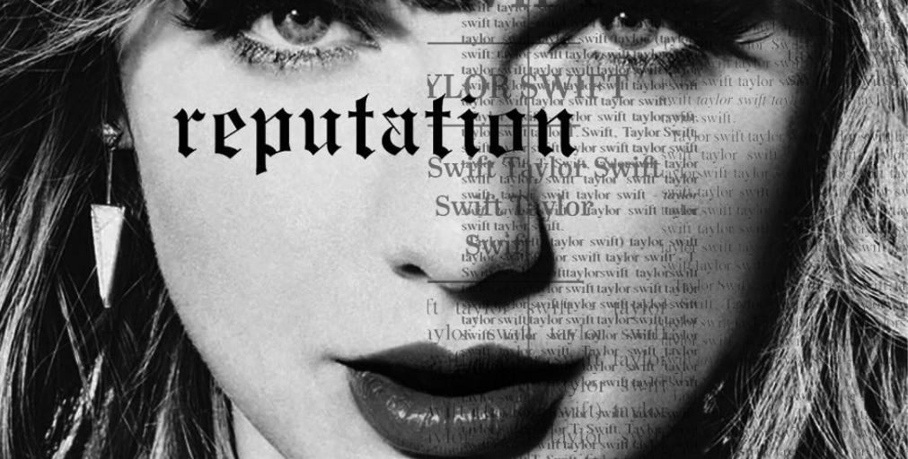
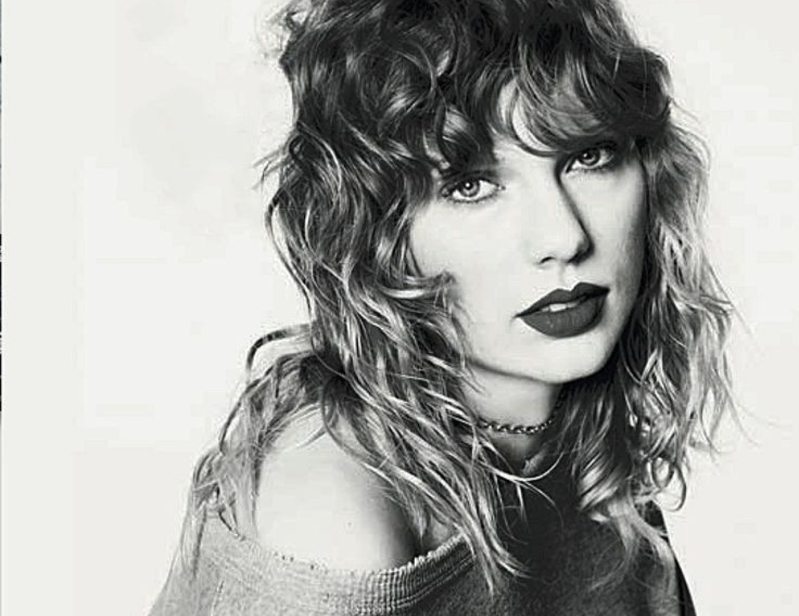
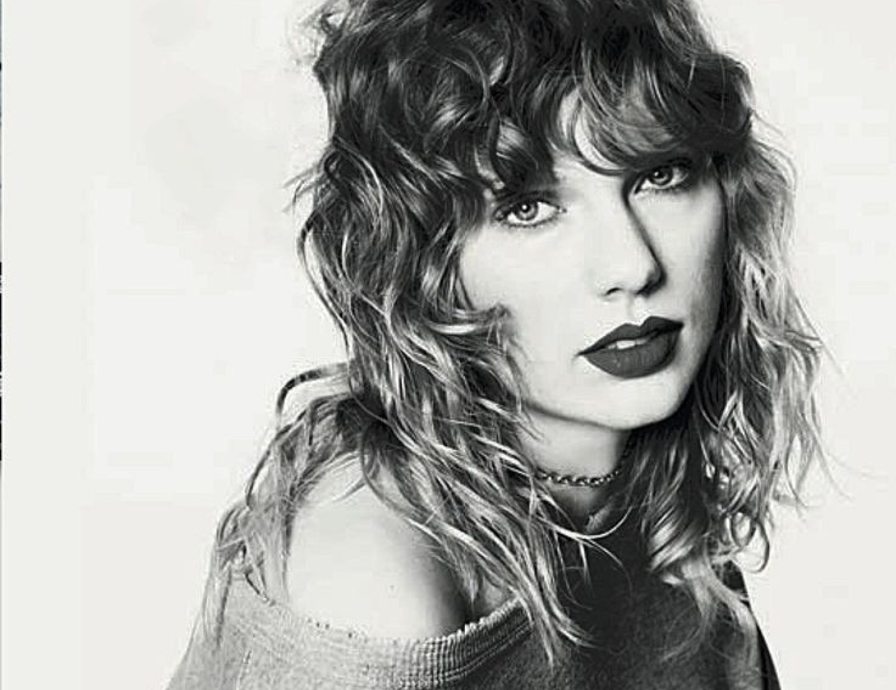

Clipe de "Look What You Made Me Do" Quebra Recordes no YouTube
O videoclipe do primeiro single de Reputation, "Look What You Made Me Do", quebrou recordes no YouTube ao atingir mais de 43 milhões de visualizações nas primeiras 24 horas. O clipe, carregado de simbolismos e referências à vida pessoal de Taylor Swift, se tornou um fenômeno cultural, sendo amplamente discutido nas redes sociais. A estética ousada e a narrativa visual elevaram o vídeo ao status de obra-prima pop.
Taylor Swift Se Reinventa nas Redes Sociais para a Era Reputation
Com o lançamento de Reputation, Taylor Swift surpreendeu ao apagar todas as suas postagens antigas nas redes sociais, criando um vazio digital que marca o início de uma nova fase em sua carreira.
Este gesto simbólico não apenas capturou a atenção dos fãs e da mídia, mas também sinalizou uma reinvenção completa. Ao eliminar seu passado digital, Swift está se distanciando das controvérsias que marcaram sua trajetória e abrindo espaço para uma nova narrativa que reflete o tom e a temática do álbum. A nova estética das suas postagens, carregada de mistério e simbolismo, alinha-se perfeitamente com a sonoridade provocadora de Reputation
Taylor Swift está usando suas redes sociais para promover o álbum com postagens enigmáticas e visuais impactantes que destacam sua evolução artística. Essa abordagem não apenas redefine sua imagem pública, mas também mostra como a presença digital pode moldar a trajetória de um artista.
Adicionalmente, a abordagem de marketing de Taylor Swift para *Reputation* revela uma estratégia inteligente de controle de imagem e narrativa. Ao abraçar uma estética visual sombria e enigmática, ela não apenas chama a atenção, mas também força uma reinterpretação de sua identidade artística. Este método é uma forma eficaz de manter a audiência intrigada e engajada, enquanto prepara o terreno para o lançamento de novos projetos e revela uma nova faceta de sua carreira.

Reputation Stadium Tour
Logo após o lançamento de Reputation, Taylor Swift anunciou as datas de sua nova turnê mundial, que promete ser uma das maiores de sua carreira. Com shows já esgotados em várias cidades, a produção promete um espetáculo grandioso, com cenários futuristas, coreografias impactantes e, claro, os sucessos de seu novo álbum.
 
